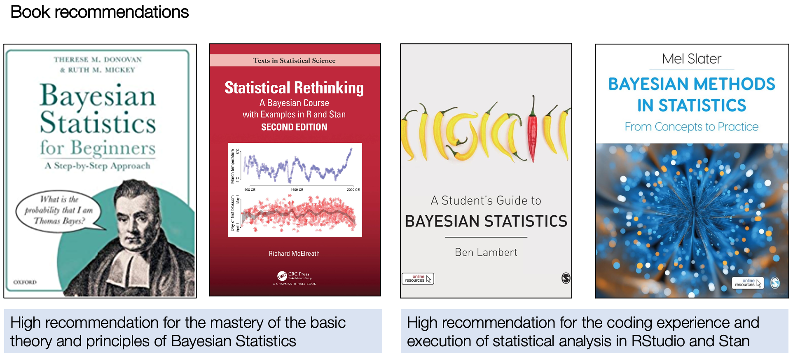

Reading List for GEOG0125
Contact me via email (a.musah@ucl.ac.uk) if you are having problems securing one or any of these recommended books from the UCL library or elsewhere. You can access some of the share reading materials [HERE]
Week 1: Introduction to Bayesian Inference
Book: [Theory] Slater, M. (2022). Bayesian Methods in Statistics: From Concepts to Practice. Chapters 1: Probability. Pages 1-15.
Book: [Theory] Slater, M. (2022). Bayesian Methods in Statistics: From Concepts to Practice. Chapters 2: Probability Distributions (Section: Some common distributions). Pages 24-45.
Book: [Theory] Donovan, T.M., & Mickey, R.M. (2019). Bayesian Statistics for Beginners: A Step-by-Step Approach. Chapters 3: Bayes’ Theorem. Pages 29-36.
Book: [Theory] Graham, A. (1994). Statistics. Chapters 13: Probability Models. Pages 226-251.
Article: [About Stan] Carpenter, B., Gelman, A., et al (2019).
Stan: A Probabilistic Programming Language. J Stat Soft. DOI: 10.18637/jss.v076.i01.Book: [Stan programming] Lambert, B. (2018). A Student’s Guide to Bayesian Statistics. Chapters 16: Stan.
Week 2: Bayesian Generalised Linear Models (GLMs)
Book: [Theory] Slater, M. (2022). Bayesian Methods in Statistics: From Concepts to Practice. Chapters 5: General Models. Pages 114-151.
Article: [About regression models and formulation] Baldwin, S.A., & Larson, M.J. (2017). An introduction to using Bayesian linear regression with clinical data. Behaviour Research and Therapy. 98:58-75. DOI: 10.1016/j.brat.2016.12.016.
Book: [Theory] Gelman, A et al. (2014). Bayesian Data Analysis (3rd Edition).Chapters 14: Introduction to Regression Models. Pages 353-378.
Week 3: Bayesian Hierarchical Models
Article: [Tutorial in Stan] Sorensen, T., & Vasishth, S. (2016). Bayesian linear mixed models using Stan: A tutorial for psychologists, linguists, and cognitive scientists. Tutorials in Quantitative Methods for Psychology. 12(3):175-200. DOI: 10.20982/tqmp.12.3.p175
Book: [Theory] Gelman, A et al. (2014). Bayesian Data Analysis (3rd Edition).Chapters 15: Hierarchical Linear Models. Pages 381-402.
Week 4: Spatial Risk Models (Part I)
Article: [Methodology] Li, L. et al (2022). An ecological study exploring the geospatial associations between socioeconomic deprivation and fire-related dwelling casualties in the England (2010–2019). Applied Geography. 144(1027718). DOI: 10.1016/j.apgeog.2022.102718.
Article: [Theory] Morris, M. et al (2019). Bayesian hierarchical spatial models: Implementing the Besag York Mollié model in stan. Spatial and Spatio-temporal Epidemiology. 31(100301). DOI: 10.1016/j.sste.2019.100301
Online Tutorials: [Stan Programming] Morris, M. et al (2019). Spatial Models in Stan: Intrinsic Auto-Regressive Models for Areal Data. URL: https://mc-stan.org/users/documentation/case-studies/icar_stan.html
Article: [Methodology] Gomez, M.J. et al (2023). Bayesian spatial modeling of childhood overweight and obesity prevalence in Costa Rica. BMC Public Health. 23(651). DOI:10.1186/s12889-023-15486-1
Article: [History] Besag, J. (1974). Spatial interaction and the statistical analysis of lattice systems. Journal of the Royal Statistical Society. Series B (Methodological) (1974): 192-236.
Article: [History] Besag, J. & Kooperberg, K. (1995) “On conditional and intrinsic autoregression. Biometrika. 733-746.
Article: [History, how the ICAR model was improved] Riebler, A., et al (2016). An intuitive Bayesian spatial model for disease mapping that accounts for scaling. Statistical methods in medical research. 25(4): 1145-1165. DOI: 10.1177/0962280216660421
Week 5: Spatiotemproal Risk Models & Bayesian Updating (Part II)
Book: [R-INLA Tutorials] Moraga, P. (2020). Geospatial Health Data: Modeling and Vizualisation with R-INLA and Shiny. Chapters 5: Areal Data. Pages 53-74.
Book: [R-INLA Tutorials] Moraga, P. (2020). Geospatial Health Data: Modeling and Vizualisation with R-INLA and Shiny. Chapters 6: Spatial modeling of areal. Lip cancer in Scotland. Pages 75-88.
Book: [R-INLA Tutorials] Moraga, P. (2020). Geospatial Health Data: Modeling and Vizualisation with R-INLA and Shiny. Chapters 7: Spatio-temporal modeling of areal data. Lung cancer in Ohio. Pages 93-108.
Book: [R-INLA Methodology] Blangiardo, M, & Cameletti, M. (2015). Spatial and Spatio-temporal Bayesian Models in R-INLA. Chapters 6: Spatial modeling. Sections 6.1-6.3, Pages 173-192.
Book: [R-INLA Methodology] Blangiardo, M, & Cameletti, M. (2015). Spatial and Spatio-temporal Bayesian Models in R-INLA. Chapters 7: Spatio-temporal models. Sections 7.1-7.2, Pages 253-258.